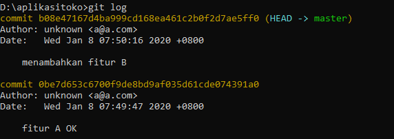
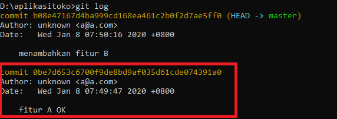

- Wed 08 January 2020
- Git
- Zarkasy
- #programming, #git
Saya ingin bercerita tentang pengalaman dimana salah satu kodingan saya yang sebelumnya bisa jalan namun setelah ditambahkan fitur baru dan direfactor tiba-tiba muncul bug. Nah jika kamu pernah mengalami ini dan kamu sudah menggunakan git, maka kamu bisa menggunakan cara ini sebagai salah satu cara untuk mencari bug. Yang dulu saya lakukan adalah
- Melakukan git log
- Melihat log kita dan mencari commit dimana kodingan kita masih OK. Disini contohnya pada log yang pertama

git log
commit yang masih OK - Menggunakan git diff untuk membandinkan kodingan yang sekarang ga OK sama dulu yang masih OK. Syntax dari git diff adalah, git diff [hash dari commit pertama [hash dari commit kedua]. Nah disini kita bisa menggunakan hash dari commit dulu yang OK dan hash dari commit terkini dimana bisa dirujuk juga menggunakan kata master.Sehingga untuk kasus ini git diffnya adalah git diff 0be7d653c6700f9de8bd9af035d61cde074391a0 master. Sekian